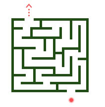

X

404
Looks like you are in a maze.
Use the keyboard or control the ball to maze exit to return to the home,
Go back HomeLooks like you are in a maze.
Use the keyboard or control the ball to maze exit to return to the home,
Go back Home